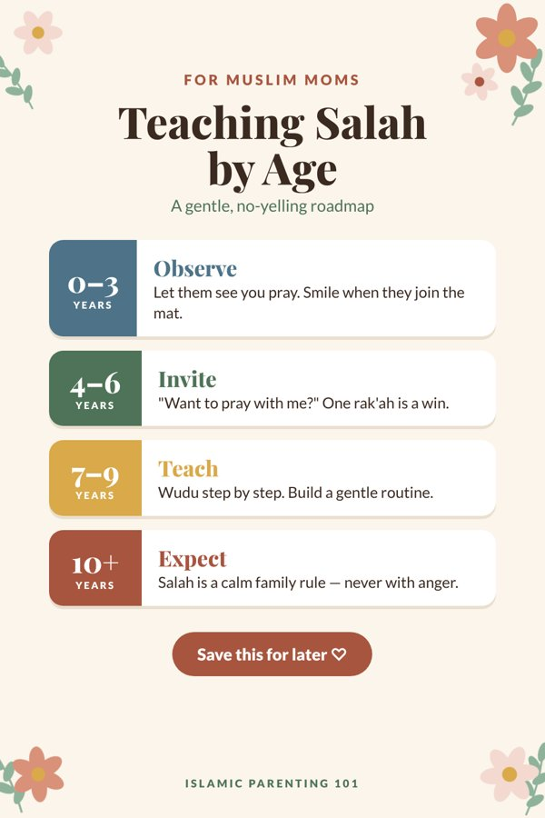

Teaching Salah by Age: A Gentle, No-Yelling Roadmap

The Prophet ﷺ gave parents a gentle and remarkably patient timeline: "Command your children to pray when they are seven years old, and discipline them for it when they are ten" (Abu Dawud). That leaves years for love to come first.
Ages 0–3: Observe
Let them see you pray. Smile when they crawl onto your prayer mat. Never push them away — it quietly teaches that prayer is for adults only.
Ages 4–6: Invite
"I'm going to talk to Allah now — want to stand with me?" If they run off after one rak'ah, let them go with a smile. The goal is association: prayer = warmth and welcome.
Ages 7–9: Teach
Formal teaching begins. Teach wudu step by step and build a gentle routine. Expect inconsistency and respond with patience — this is a three-year training window.
Ages 10+: Expect
Salah becomes a calm, clear family expectation. Consequences for missing it are introduced consistently — never with rage or humiliation.
Make salah a place of joy
The Prophet ﷺ let his grandsons climb onto his back during sujud, and shortened the prayer when he heard a baby crying. Make your prayer corner beautiful, pray together often, and tell your children what salah means to you.
A child who is dragged to the prayer mat in anger will one day run away from it. A child who is invited with love will keep returning.

These ideas come from Hearts Before Habits — a complete Islamic parenting guide with scripts, du'as and a 30-day plan.
See the book